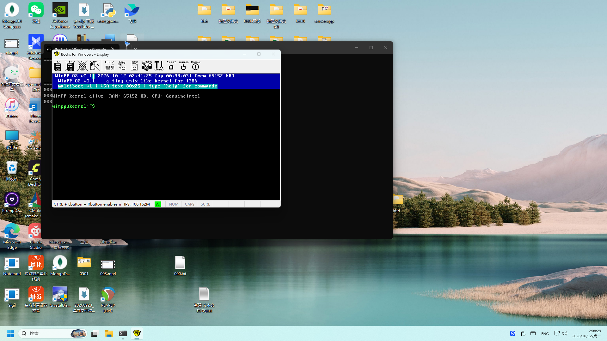
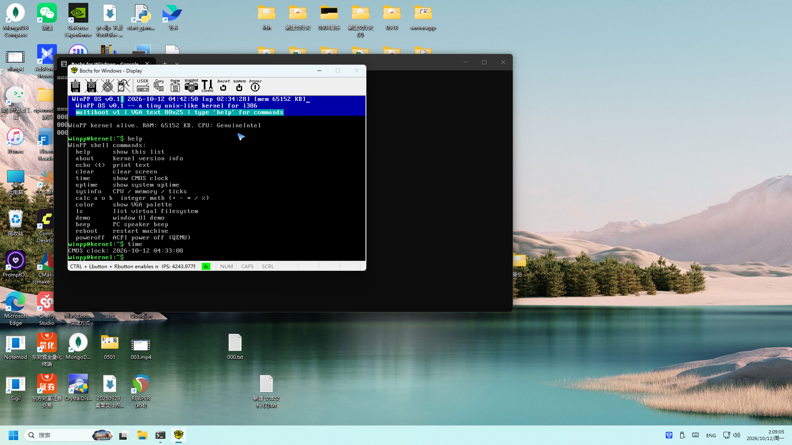
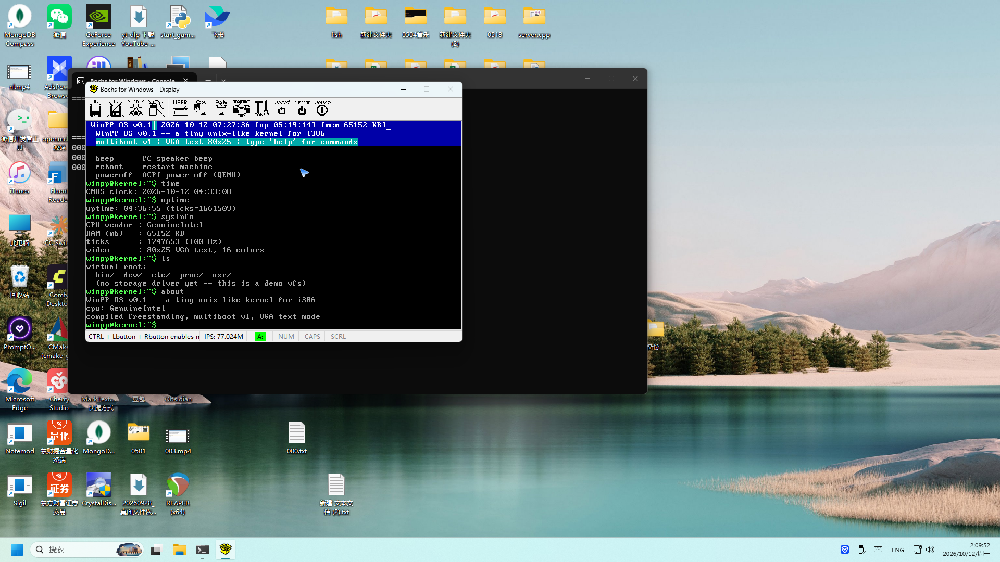
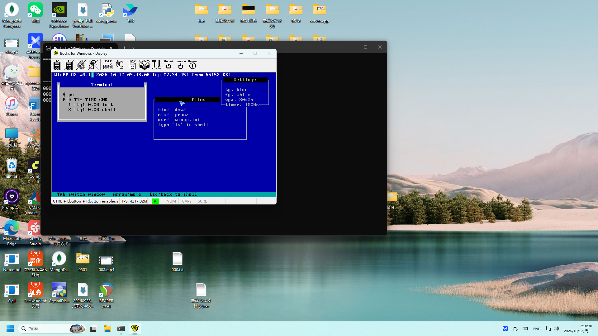
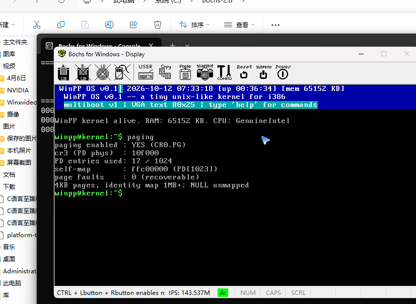
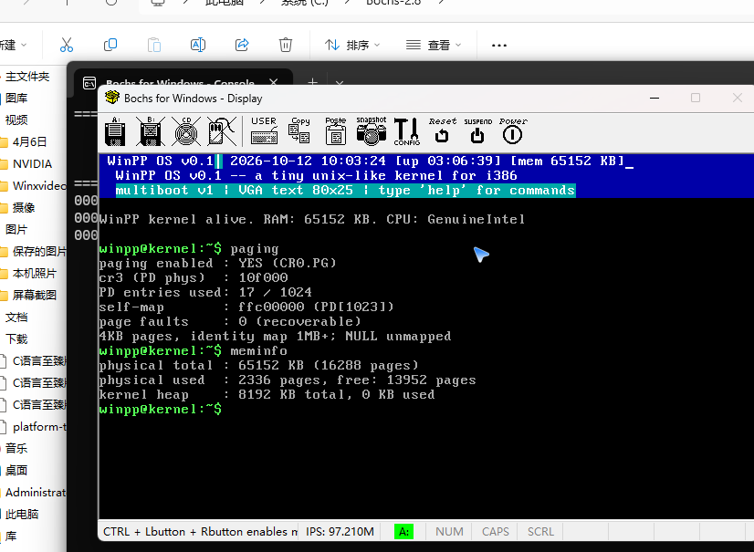
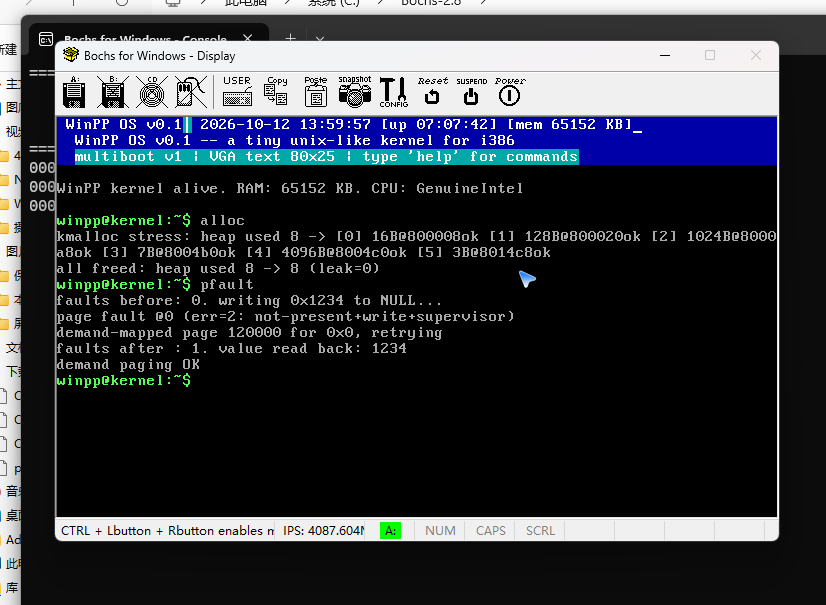
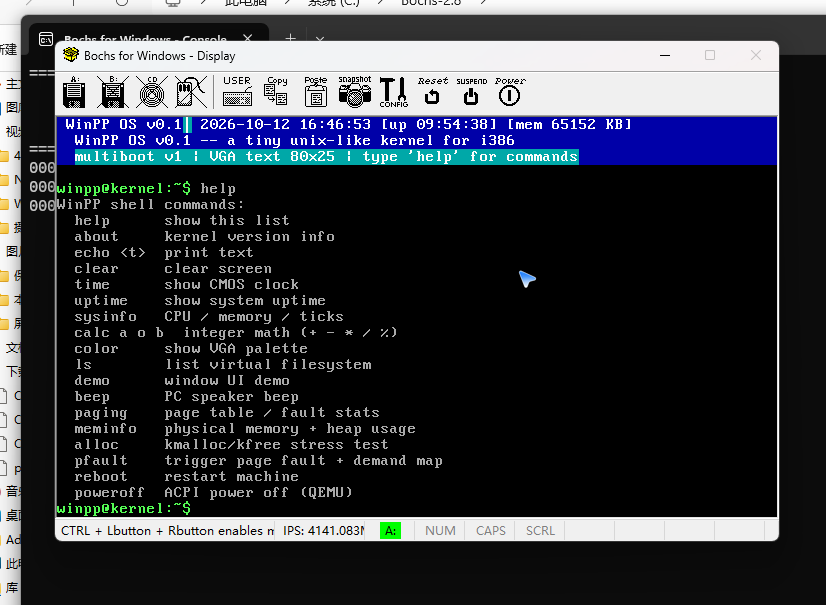
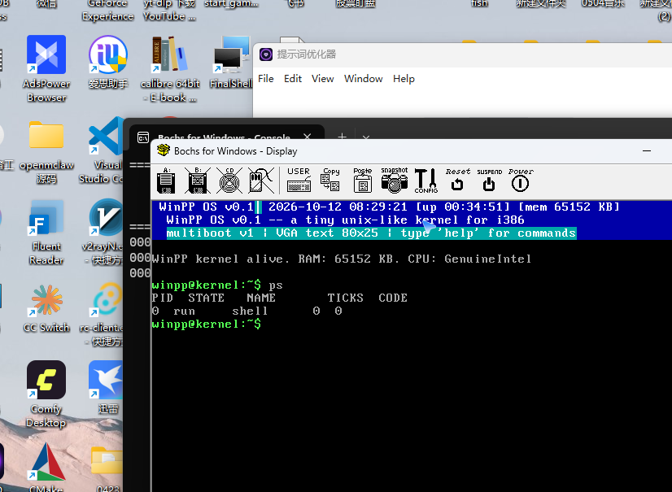
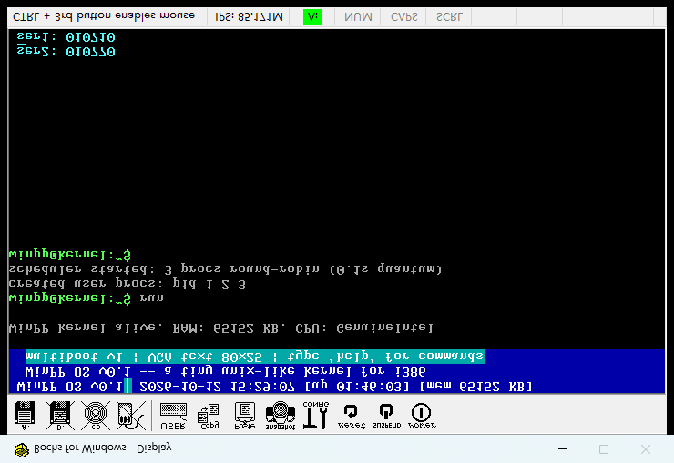

一个从零写起的 i386 迷你操作系统：用什么语言、什么底层逻辑、怎么一步步把它做完整、目前有什么功能——全部展开在这一个页面里，所有结论都经过 Bochs 2.8 实机验证。
内核不是用一种语言写的——引导用汇编、内核本体用 C 子集、工具链用 Zig。三样各管一段，最后被 Zig 编译成一份扁平的 i386 二进制。
bootsec.S：512 字节引导扇区，纯实模式汇编，负责让 BIOS 把内核从软盘读进内存。为什么这里必须用汇编：引导阶段没有 C 运行时、没有栈，只能用寄存器干活。
GDT / IDT / 驱动 / Shell / 窗口 UI 全部用 C 写。是"裸机 C"：没有 libc、没有标准库，字符串比较、printf 全部自己实现。编译器只负责出机器码，剩下的都是内核自己的事。
本机没有现成 C 编译器，用 zig build-exe -target x86-freestanding 做交叉编译。两个坑：32 位目标名是 x86-freestanding；zig 0.17 不支持 --oformat=binary，要先出 ELF 再用 zig objcopy -O binary 转扁平二进制。
一台 x86 机器从按电源到出现可交互的 Shell，靠的是一条层层叠叠的因果链：引导 → 保护模式 → 中断 → 驱动 → 内核服务 → 应用层。每一层只依赖下一层。
CPU 上电后在实模式 0x7C00 执行引导扇区。它做四件事：用 CHS 把内核从软盘第 1 扇区起读入内存 0x100000；开启 A20 地址线；装载 GDT；把 CR0 保护位置 1 跳进 32 位保护模式。之后内核入口接管一切。
GDT 建平坦内存模型：代码段 / 数据段基址 0、限长 4GB，段选择子固定，C 代码里看到的就是线性地址。同时打开 SSE（CR4.OSFXSR|OSXMMEXCPT），因为编译器生成的 pxor xmm0 在没开 SSE 时直接触发异常。
IDT 装 256 个门：0–31 异常（除零、缺页等）+ 32–47 IRQ（PIC 重映射后的硬件中断）。时钟每 10ms 触发一次 IRQ0，按键每敲一下触发 IRQ1，内核在中断里完成计时、收键、刷新状态栏。异常则直接打寄存器转储 + Panic 屏。
PIT 可编程定时器（100Hz 节拍）、PS/2 键盘（扫描码→ASCII + 方向键）、CMOS RTC（读出年月日时分秒）、VGA 文本模式（直接写 0xB8000 显存）、COM1 串口（调试日志）。每个驱动就是一组端口读写 + 状态机。
kernel.c 的 kmain 是总导演：校验内存、初始化 GDT/IDT/PIC/定时器/键盘/串口，然后画状态栏、起 Shell。还实现 8042 键盘控制器重启（reboot）与 ACPI 关机（poweroff）。
Shell 逐键读键盘、回显、回车分发命令，22 条内建命令（第二阶段新增 paging / meminfo / alloc / pfault；第三阶段新增 run / ps / kill / stop 进程管理）。demo 是一个迷你窗口管理器：3 个重叠窗口，Tab 切焦点、方向键移动、Esc 返回——全部在 80×25 文本显存上用画框实现。第三阶段起，run 会在用户态（ring3）拉起 3 个独立进程 user1/2/3，经 int 0x80 系统调用向屏幕和串口打印计数。
26 个源文件，按职责分成六组：引导与中断（汇编）、内核核心（C）、内存管理（C）、进程与调度（C）、驱动（C）、应用（C+汇编）。所有文件都在 D:\WinPP\winpp-os\src\。
| 文件 | 语言 | 职责 |
|---|---|---|
| bootsec.S / bootsec.ld | GAS 汇编 | 512B 引导扇区：实模式 CHS 读内核到 0x100000 → A20 → LGDT → 进保护模式跳转 |
| boot.S | GAS 汇编 | 32 位内核入口：可选的 Multiboot v1 头（0x1BADB002）、开 SSE、设栈、A20/LGDT |
| isr.S | GAS 汇编 | 32 个异常 + 16 个 IRQ 的汇编存根，保存寄存器后跳 C 处理函数 |
| kernel.c | C | kmain 总入口：内存/CMOS 校验、初始化序列、IRQ 分发、#PF 缺页处理、Panic 屏、8042 重启、ACPI 关机、状态栏 |
| gdt.c/.h | C | 平坦内存模型 GDT（内核/用户代码与数据段，4GB）+ TSS 描述符 |
| idt.c/.h | C | 256 门 IDT + 8259 PIC 重映射（IRQ 0–7 → 32–39，IRQ 8–15 → 40–47）；0x80 系统调用门（DPL=3） |
| pmm.c/.h | C | 物理页分配器：1KB 位图 + 4KB 页粒度，保留低 1MB 与内核，first-fit 找页 |
| paging.c/.h | C | 4KB 二级分页：PD/PT 构建、恒等映射 1MB+、递归自映射 PD[1023]、map/unmap、invlpg；map_page 对用户页自动给 PDE 补 USER 位 |
| kheap.c/.h | C | 内核堆：0x800000 起 8MB，first-fit 边界标签 + 前后向合并（kmalloc/kfree） |
| sched.c/.h | C | 进程调度器：pcb_t[8] 表、pid0=shell 常驻、round-robin 时间片 0.1s、用户进程创建（3 物理页：内核栈+代码+用户栈）、ZOMBIE 回收、sched_kill |
| tss.c/.h | C | TSS：ss0/esp0 设置，每次切换更新目标进程内核栈顶（tss_init 必须先于 gdt_init） |
| vga.c/.h | C | 80×25 文本驱动：写 0xB8000、光标、画框、自实现 vga_printf（含 %d/%u/%x/%s 与补零） |
| keyboard.c/.h | C | PS/2 键盘：扫描码表 → ASCII，Shift/CapsLock/E0 方向键，128 字节环形缓冲 |
| timer.c/.h | C | PIT 100Hz 节拍计数，供 uptime / 状态栏刷新 / 调度时间片 |
| rtc.c/.h | C | CMOS 实时时钟：读年月日时分秒 |
| serial.c/.h | C | COM1 串口输出——机器侧取证通道，按键日志与屏幕转储都走这里 |
| shell.c/.h | C | 交互 Shell：readline、22 条命令分发（含 run/ps/kill/stop）、命令前后全屏转储到串口 |
| demo.c/.h | C | 窗口 UI 演示：3 个重叠窗口、焦点切换、移动、Esc 返回 |
| user1/2/3.S + user1/2/3.ld | GAS 汇编 | 用户态进程：链接基址 0x4/0x5/0x6M，busy-wait + int 0x80（write 到 VGA/串口） |
| users_inc.c/.h | C（自动生成） | 构建时由 Python 把 userN.bin 转成 C 数组内嵌内核（zig lld 不支持 .incbin 的替代方案） |
| linker_flat.ld / linker.ld | 链接脚本 | 把内核链接到 0x100000 入口 |
zig build-exe -target x86-freestanding → ELF zig objcopy -O binary → kernel.bin (28,688 B) 引导扇区 512B + 内核 57 扇区 → floppy.img (1.44MB)
Bochs 最稳的引导路径是 1.44MB 软盘：扇区 0 放 512B 引导扇区（以 0xAA55 结尾，BIOS 才认），扇区 1 起放内核。另一种方式是 Multiboot ELF，留给 GRUB 用。
GUI 之外有一套无头通路：bochs -q -f bochsrc.txt 跑 6–12 秒后强杀，读 bochs.log（0 故障）与 serial.out（启动轨迹），用来快速回归每次改动。
从零到一个能交互的内核，路径是固定的：先让机器能启动，再让中断能响，再让硬件能用，最后才谈得上"交互界面"。
本机没有 C 编译器和模拟器。QEMU 四路全灭（winget 无进度 / 官网域名失效 / 镜像全是空壳），VirtualBox 安装因系统待重启被拒。最终选定 Zig 0.17 交叉编译 + Bochs 2.8，并攻克 zig 的 i386 freestanding 与 binary 输出问题。
Zig 0.17 · Bochs 2.8 · 排除 QEMU/VirtualBox写 512B bootsec.S（CHS 读盘 / A20 / LGDT / 跳保护模式）和 boot.S（SSE / 栈 / 跳 kmain）。这一步的目标只有一个：Bochs 里出现内核的第一行输出。
修复 LBA 偏移 Bug（见下）建平坦 GDT，IDT 挂 256 个门，8259 重映射避免 IRQ 与 CPU 异常冲突，异常处理带寄存器转储 + Panic 屏。
先做 VGA 文本输出（没有它什么调试都看不见），再做 PIT 100Hz 节拍、PS/2 键盘、CMOS 时钟，最后加 COM1 串口——它后来成了整个调试取证的真值通道。
实现 readline（回显 / 退格 / 回车分发）、参数切分、18 条命令（第三阶段扩到 22 条）。键盘扫描码 → ASCII 的映射决定了后面一个关键 Bug 的埋点。
demo 命令画 3 个重叠窗口，实现 Tab 切焦点、方向键移动、Esc 返回——一个微型窗口管理器，全部基于 80×25 文本缓冲的画框与重绘。
无头模式跑 6–12 秒查日志；GUI 模式通过桌面自动化逐键输入 help / time / demo 等命令，用截图 + 串口双通道取证。最后修通 Enter 分发，交互闭环。
39 次按键日志 · 14 次屏幕转储 · 0 故障写 start-winpp.bat（双击即启动，自动关旧开新），README 记录全部排障链，实测截图归档到 shots/。
自下而上搭三层：pmm（位图物理页分配器）→ paging（4KB 二级分页 + 递归自映射 + #PF 缺页处理）→ kheap（内核堆 kmalloc/kfree）。新增 4 条命令实机全绿，期间修复 3 个新 Bug（见 Bug 卡 7–9）。第三阶段再修 3 个（Bug 卡 10–12）。
PD 17/1024 项 · demand paging OK · leak=0GDT 扩到 6 项（用户代码/数据段 + TSS）、int 0x80 系统调用门（DPL=3）、调度器 round-robin 时间片 0.1s、3 个用户进程 user1/2/3（链接基址 0x4/0x5/0x6M）经 syscall 向 VGA 与串口打印计数。Shell 新增 run / ps / kill / stop。实机全绿：0 页错误，串口 282+ 条 [pidN] 输出。
3 进程并发 · 0 PAGE FAULT · run/ps/kill/stop 全实测每个 Bug 都不是看代码猜的，而是用 bochs.log + 串口逐级探针定位、修复后再实机验证的。第 6 个是让交互闭环的最后一块拼图，第 7–9 个来自第二阶段分页子系统。
CHS 计算误用寄存器本身，读到 LBA 0（引导扇区自己）覆盖了内核代码，执行到 mov ss,ax（AX=0）触发三重故障重启。日志里 EIP=0x100007、DS=ES=0 暴露了现场。修复：LBA = si + 1。
编译器在 0x101605 生成 pxor xmm0,xmm0，但 CR4 没开 OSFXSR，第 3 次异常直接复位。修复：boot.S 入口设置 CR4.OSFXSR|OSXMMEXCPT (0x600)。
开 CR4 的代码误放在 push magic/info 之前，把 EAX 里的 Multiboot magic 冲掉了。修复：先 push 保存参数，再开 CR4。
扁平路径没走 Multiboot，内存信息拿不到。修复：直接从 CMOS 端口 0x70/0x31 读扩展内存，最终正确显示 65152 KB。
状态栏日期用 %04u-%02u，逐个 vga_putc 补零的宽度循环把内核卡死，满屏 '0'。串口逐级探针 [a][s1..s6][b..e] 定位到 printf。修复：在内部 buf 补零后统一输出，serial 端跳过宽度数字。
键盘驱动把 Enter 扫描码 0x1C 映射为 '\n'(10)，但 keyboard.h 里 KEY_ENTER 误定义成 13(CR)。Shell 判断 k == KEY_ENTER 永不命中——字母能回显、命令永远不执行，提示符文本不断累积。修复：#define KEY_ENTER '\n'。修复后 help / time / uptime / sysinfo / ls / about / demo 全部实机执行成功。
%#x → 地址显示 ##x第二阶段 GUI 首测，cr3 一栏显示 cr3 (PD phys) : ##x——自实现的 vga_printf / serial_printf 都不支持 # 前缀格式符。修复：22 处（kernel.c 17、pmm.c 1、shell.c 4）批量替换为 %x，地址改为显式 0x 前缀。
pd_entry(i) 用了 0xFFC00000 + i*4 读页目录项，但该虚拟地址经自映射翻译到 PT0 页而非 PD 自身——769 恰好是 PT0 里 768 个恒等 PTE + 1 个 VGA PTE 之和，数值自洽的假象。修复：读 PD 必须走 0xFFFFF000 + i*4（PD[1023] 的二级自映射，PD 自身落在虚拟地址最高 4KB）。修复后 GUI 显示正确的 PD entries used: 17 / 1024。
释放小块后做前向合并时，nn == h 的严格相等判断遇到垃圾 size 会越过堆边界；坏指针也没兜底。修复：① kfree 加坏指针边界检查（越堆直接拒绝）；② 向后合并加 n+n->size <= heap_end 边界；③ 前向合并改 if (nn >= h) break。修复后 alloc 六块分配/写回/释放全绿，leak=0，提示符恢复。
第三阶段 run：3 个用户页全部 PAGE FAULT err=5（P=1、W=0、U=0）。根因：map_page 只给 PTE 写 USER 位，PDE 仍是 boot 时无 U 的恒等映射项——用户态访问 4MB+ 先查 PDE 即被拒。修复：map_page 在 flags 含 U 位时给 PDE 补 0x4，实测 pd=112067 生效。
修 #10 后 fault @0（用户"程序"执行垃圾）。深度归因：zig cc 的 lld 不支持 .incbin，.userprogs 段字节未进 kernel.bin，_userN_start 符号（=0x110000，恰为 pmm 分配的 PD 页）读到的是页表内容。修复：弃 .incbin，build 时 Python 把 userN.bin 转 C 数组 users_inc.c/.h 内嵌；kernel.bin 检出 user1 机器码特征 bc 00 10 70 确认。
ps 首测串口输出 0 x-7s x-10s ... 列错位——自实现 vga_printf 只认 % 后的数字与字母，遇 %- 参数错位吞掉后续格式。修复：识别 %- 跳过左对齐标记，ps 输出恢复 PID STATE NAME TICKS CODE / 0 run shell 0 0 干净对齐。
开机进 Shell 后，顶部状态栏每秒刷新（系统时钟 / 运行时间 / 内存），下面是可以逐条敲的 22 条命令，外加窗口 UI 演示与用户进程管理。第二、三阶段新增的 8 条命令（paging / meminfo / alloc / pfault / run / ps / kill / stop）在 Bochs 2.8 上全部实机执行并取证。
| 命令 | 作用 | 实机验证输出 |
|---|---|---|
| help | 显示全部命令 | 22 条命令列表逐行上屏 |
| about | 内核版本与编译信息 | WinPP OS v0.1 / i386 / multiboot v1 |
| echo | 回显文本 | — |
| clear | 清屏 | — |
| time | 读 CMOS 实时时钟 | CMOS clock: 2026-10-12 04:33:08 |
| uptime | 系统运行时间（真实节拍） | uptime: 04:36:55 (ticks=1661509) |
| sysinfo | CPU / 内存 / 节拍 / 显示模式 | GenuineIntel / 65152 KB / 80x25 VGA |
| calc | 内核内整数运算 + - * / % | — |
| color | VGA 调色板 | — |
| ls | 虚拟文件系统 | bin/ dev/ etc/ proc/ usr/ winpp.ini |
| demo | 窗口 UI 演示 | Terminal / Files / Settings 三窗口 |
| beep | PC 扬声器蜂鸣 | — |
| paging | 分页状态：CR0.PG / CR3 / PD 项数 / 自映射 / 缺页计数 | enabled YES · cr3=0x10f000 · PD entries 17/1024 |
| meminfo | 物理内存与内核堆账目 | 16288 pages · used 2336 · heap 8192 KB / 0 used |
| alloc | kmalloc/kfree 压力测试（分配+写回校验+释放） | 6 块分配链 800008→8014C8 全 ok · leak=0 |
| pfault | 触发缺页 + demand mapping 恢复 | #PF(err=2) → map 0x120000 → 读回 0x1234 → OK |
| run | 拉起 3 个用户进程（round-robin） | created pid 1 2 3 · [pidN] userN: 计数滚动 · 0 页错误 |
| ps | 进程表：PID / STATE / NAME / TICKS / CODE | 0 run shell · 1 ready user1 · 2 ready user2 |
| kill <pid> | 终结指定用户进程 | [kill] pid 1 terminated |
| stop | 停止调度器、清场全部用户进程 | scheduler stopped, all user procs terminated |
| reboot | 8042 键盘控制器复位 | — |
| poweroff | ACPI 关机 | — |
另有 clear / echo 等共 22 条；"—"为未逐一实机展示但命令已内建。
3 个重叠窗口各司其职：Terminal 内跑一个 ps 进程表（PID/TTY/TIME/CMD）、Files 展示虚拟目录、Settings 显示 bg/fg/vga/timer 参数。Tab 切换焦点窗口，方向键移动当前窗口，Esc 退出回 Shell。这是内核里"交互界面"的完整演示。
顶部第 0 行由 IRQ0 定时重绘：WinPP OS v0.1 | 2026-10-12 03:03:57 [up 00:34:16] [mem 65152 KB]——系统时钟、运行时间、内存三个读数实时跳。实现要点：重绘前保存 / 恢复光标位置，不打扰 Shell 正在进行的输入。
从上往下读：用户能碰到的是 Shell 与窗口 UI，最底下是裸硬件。层与层之间只通过定义的接口（中断、端口、函数）通信。
两条关键链路：一条是"按开机到 Shell 就绪"的启动流程，一条是"敲一个键到命令执行"的输入分发流程。均为横向、从左到右。
一句话意义：第三阶段是"多个程序能同时跑"；第四阶段是"每个程序有自己的天地（独立地址空间），能繁衍（fork）、能变身（exec）、能读写数据（文件系统）"——到这一步，内核就是真正的"迷你 Linux"。
| 编号 | 调用 | 参数 | 说明 |
|---|---|---|---|
| 3 | fork | — | 复制当前进程为子进程：父进程返回子 pid，子进程返回 0 |
| 4 | exec | prog_idx | 同一进程换成另一个程序（内嵌 userN.bin），pid 与地址空间不变 |
| 5 | open | name, flags | 打开/创建内存盘文件，返回 fd（flags: 0=读, 1=创建/写） |
| 6 | write | fd, buf, len | 向文件写数据（落入内核内存盘，用户态无法直接触碰） |
| 7 | read | fd, buf, len | 从文件读数据（内核拷回用户内存） |
| 8 | close | fd | 关闭文件，重置偏移 |
| 子任务 | 做了什么 | 实测铁证 |
|---|---|---|
| S4-1 独立地址空间 | 每个用户进程独立页目录 PD + PT1，调度切换换 CR3；新 PD 复制内核恒等映射 + 自映射指向自身；用户态访问其他进程/内核地址空间即 #PF | 3 进程 pd=124000/129000/12e000；切换日志 pd 逐个变化（含回 shell 的 110000）；0 页错误，294 条计数 |
| S4-2 fork | sched_fork：复制 pcb、内核栈、PD/PT1、用户代码页/栈页内容；子进程从 fork 调用点返回 eax=0 | [fork] pid 1 -> child pid 2；父打印 parent、子打印 child 独立计数，286 条输出 0 页错误 |
| S4-3 exec | sched_exec：解除旧代码/栈映射，拷入目标程序，改入口与栈地址，同一 pid 变身 | [pid1] user5: before exec... -> [exec] pid1 -> user2 -> [pid1] user2: 计数（pd 不变） |
| S4-4 文件系统 | fs.c 内存盘：16 文件槽 x 4KB；open/read/write/close 系统调用；数据区在内核内存 | user6 创建 hello.txt、写 "Hello WinPP FS!"、关闭重开读回、串口打印，循环 208 次 0 页错误 |
| 文件 | 职责 |
|---|---|
| src/fs.c + fs.h | 内存盘文件系统：文件表、open/read/write/close、fs_list |
| src/user4.S | fork 演示程序（fork 后父子各自计数） |
| src/user5.S | exec 演示程序（打印后 exec 变身成 user2） |
| src/user6.S | 文件系统演示（创建/写/读 hello.txt） |
一句话意义：第四阶段每个进程有了独立地址空间；第五阶段让进程之间能互相传数据——管道（水管流水）、命名管道（挂牌水管）、消息队列（信箱传信）。
| 编号 | 调用 | 参数 | 说明 |
|---|---|---|---|
| 9 | pipe | — | 创建匿名管道，返回读端 fd（写端 = fd+1） |
| 10 | fifo_create | name | 创建/复用命名管道，返回读端 fd（写端 = fd+1） |
| 11 | msgsend | src, len | 投递一条消息（≤32B）到全局队列，满则丢最旧 |
| 12 | msgrecv | dst | 取出一条消息返回长度；空返回 -1 |
| 子任务 | 做了什么 | 实测铁证 |
|---|---|---|
| S5-1 管道 | ipc.c 环形缓冲 4KB；fd 槽复用（type 1/2 读/写端）；syscall 9 pipe() 返回读端 fd | read-fd=0 write-fd=1；[pid1] Hello Pipe! 循环 461 次，0 页错误 |
| S5-2 命名管道 | 名字表 8 个 FIFO（各 4KB），同名复用；syscall 10 fifo_create(name) | 'fifo0' created: read-fd=2 write-fd=3；[pid1] Hello FIFO! 循环 470 次，0 页错误 |
| S5-3 消息队列 | 全局环形队列 32 条 x 32B；msgsend/msgrecv，满丢最旧、空返 -1 | send len=2/5/7 -> recv 一一对应；AB/msg12/msg-789 各 375 条，0 页错误 |
| 文件 | 职责 |
|---|---|
| src/ipc.c + ipc.h | 管道/命名管道/消息队列内核实现（环形缓冲 + 消息队列） |
| src/fs.c + fs.h | fd 槽加 type/obj 字段；read/write 按类型分发到 IPC |
| src/user7.S | 管道演示（pipe 一次创建，循环写读回） |
| src/user8.S | 命名管道演示（fifo_create "fifo0"） |
| src/user9.S | 消息队列演示（发 3 条不同长度、收 3 条打印） |
一句话意义：第四阶段文件系统是"平铺的文件表"；第六阶段加了目录与路径——mkdir 建目录、dir/file.txt 定位文件、cd/ls/pwd 在目录间走动，向"迷你 Linux"的文件观又近一步。
| 编号 | 调用 | 参数 | 说明 |
|---|---|---|---|
| 13 | mkdir | path | 创建目录（相对/绝对路径），父目录必须是目录，已存在返回 0 |
| 14 | chdir | path | 切换内核当前目录 fs_cwd，目标必须是目录 |
| 子任务 | 做了什么 | 实测铁证 |
|---|---|---|
| S6-1 目录 | fstab 槽 type=5 目录项；syscall 13 mkdir；父目录存在性检查；幂等返回 0 | [fs] mkdir '/docs' fd=0；mkdir '/docs/docs2' fd=1；(exists) 幂等 |
| S6-2 路径解析 | fs_resolve 相对->绝对（cwd 拼接 + 去尾斜杠）；fs_parent 取父；open 按绝对路径精确匹配，创建时校验父目录 | open created '/docs/a.txt' fd=1；相对 "b.txt" -> '/docs/b.txt' fd=2；Sub File! 循环 800 次 |
| S6-3 shell 增强 | mkdir/cd/pwd/ls 命令；提示符显示 cwd（winpp@kernel:/docs$）；fs_ls 前缀匹配列目录 | [ls] /: docs/ 1 entries；fslist 4 entries (cwd=/docs)；0 页错误 |
| 文件 | 职责 |
|---|---|
| src/fs.c + fs.h | fs_cwd、fs_resolve/fs_parent/fs_is_dir、fs_mkdir、fs_chdir、fs_ls（目录列），open 路径化 |
| src/sched.c | syscall_handler 加 13=mkdir / 14=chdir（共 15 个系统调用） |
| src/shell.c | cmd_mkdir/cmd_cd/cmd_pwd、cmd_ls 改真目录列、提示符显示 cwd、fs2 命令 |
| src/user10.S + user10.ld | 目录/路径演示（mkdir /docs + 绝对写 a.txt + chdir + 相对写 b.txt） |
一句话意义：键盘/定时器/串口从"散落的外设代码"收编成一张设备表，统一 read/write/ioctl/irq 四个接口，中断按设备分发——外设第一次有了正式编制。
| major | 名称 | 类型 | IRQ | 统一接口能力 |
|---|---|---|---|---|
| 1 | kbd | char | 1 | read（阻塞读一键） |
| 2 | timer | clock | 0 | ioctl（DEV_IOCTL_TICKS / UPTIME）+ irq=timer_tick |
| 3 | com1 | char | 4(未开) | write（串口输出） |
| 子任务 | 做了什么 | 实测铁证 |
|---|---|---|
| S7-1 设备框架 | device_t 表（name/type/major/irqno/init/read/write/ioctl/irq）；device_register / device_get / device_by_irq / device_count；DEV_MAX=8 | [dev] registered 3 devices 注册表打印正确 |
| S7-2 三大设备驱动化 | keyboard_device()/timer_device()/serial_device() 各自暴露设备描述，kmain [3b] device_init_all 统一注册 | kbd major=1 irq=1 r=1 / timer major=2 irq=0 io=1 / com1 major=3 irq=4 w=1 |
| S7-3 中断按设备分发 | irq_handler 改查 device_by_irq(irq)->irq()；内核只留策略层（调度/状态栏） | dev 命令：kbd.read='z'、timer.ioctl ticks=2150、com1.write=43B；0 页错误 |
| 文件 | 职责 |
|---|---|
| src/device.c + device.h | 设备表、注册/查询/中断分发、device_init_all 统一注册三个设备 |
| src/keyboard.c / timer.c / serial.c | 各加 keyboard_device()/timer_device()/serial_device() 设备描述 |
| src/kernel.c | irq_handler 改设备表分发；kmain 加 [3b] device_init_all |
| src/shell.c | 新命令 dev：打印设备表 + 实测 read/ioctl/write |
| bochsrc.txt | clock sync=none → sync=realtime（修复虚拟时钟加速 326 倍） |
| 编号 | 问题与修复 |
|---|---|
| BUG-S7-01 | serial_printf 不支持 %- 左对齐 → 设备表打印错乱（major 变指针值）。修复：格式化跳过 '-' 标记 |
| BUG-S7-02 | serial_printf 不支持 %c → 读键显示假象 'c'（实际读到 'z'）。修复：增加 %c 分支 |
| 环境 | Bochs sync=none 虚拟时钟加速 ~326 倍（PIT 32.6kHz、uptime 失真）。修复：sync=realtime，PIT 恢复 100Hz（串口核验 29s/2910 ticks） |
一句话意义：系统第一次有"主人和客人"——root(uid=0) 管理员、guest(uid=1) 普通用户；每个文件标了属主和 rwx 权限，读写/建目录/进目录都先查权限。guest 读 root 私有文件被 EACCES 拒绝。
| UID | 用户名 | 权限语义 |
|---|---|---|
| 0 | root | 管理员：绕过一切权限检查（Linux root 惯例） |
| 1 | guest | 普通用户：按文件 mode 的 owner/other 位判断 |
| 元素 | 说明 |
|---|---|
| owner_uid | 每槽属主（创建者即属主） |
| mode（6 位） | bit5-3 = 属主 rwx；bit2-0 = 他人 rwx。0644=属主读写+他人读；0600=仅属主；0700=仅属主全权 |
| fs_can(uid,owner,mode,want) | want:4=读/2=写/1=可进入；uid==owner 看 owner 位，否则看 other 位；uid==0 恒通过 |
| 检查点 | fs_open（读/写模式）、fs_write、fs_read、fs_mkdir（父目录写）、fs_chdir（目录 x 位） |
| 预置演示文件 | /secret.txt 0600、/public.txt 0644、/rootonly 0700 目录 |
| 子任务 | 做了什么 | 实测铁证 |
|---|---|---|
| S8-1 用户与身份 | user.c 账户表；login/whoami/id；pcb.uid；syscall15 getuid；提示符 user@kernel:path #/$ | login guest → whoami guest(uid=1)；提示符 guest@kernel:/ $ |
| S8-2 文件权限 | fs_ent 加 owner/mode；fs_can 检查；chmod；ls 显示 mode+属主；预置三文件 | guest 读 /secret.txt EACCES；root 放行 |
| S8-3 演示进程 | user11.S：getuid + 读公开/私有 + 写文件；fs11 命令 | guest：sec-read-DENIED；root：sec-read-OK；chmod 644→guest 可读、600→被拒 |
| 文件 | 职责 |
|---|---|
| src/user.c + user.h（新） | 用户表、user_init/user_login/user_name_of/user_current_uid |
| src/fs.h + fs.c | owner_uid+mode 字段、fs_can 检查、chmod、预置演示文件、ls 权限列 |
| src/sched.h + sched.c | pcb.uid、创建/fork 继承身份、syscall15 getuid、syscall16 chmod、ps 加 UID 列 |
| src/shell.c | login/whoami/id/chmod/fs11 命令、提示符用户名 + #/$ |
| src/user11.S + user11.ld（新） | 权限演示进程（入口 0x680000，栈 0x7A1000） |
| src/kernel.c | kmain 加 [10b] user_init |
| 编号 | 问题与修复 |
|---|---|
| 修正 1 | chmod 初版用十进制解析（644=六百四十四），与 Linux 八进制不符。修复：k_octal 八进制解析 |
| 修正 2 | 测试工具 _sendkeys.py 缺 '/' '.' 键映射，路径参数被敲成 "secrettxt"。修复：补 VK 0xBF/0xBE |
一句话意义：程序学会"排队和睡觉"——sleep 主动让出 CPU，信号量/互斥锁保证多个进程抢资源时一个进、一个等。16 次互斥进出零违规。
| 项 | 说明 |
|---|---|
| PROC_SLEEPING | 第 4 种状态：睡眠/等待信号量中，不参与调度 |
| pcb.wake_tick | sleep 唤醒时刻（timer_ticks 值） |
| pcb.blk_sem | 阻塞等待的信号量 id；-1 = 纯 sleep |
| sched_wakeup_scan() | 每 tick 由 irq_handler 调用，到期 sleep 进程置 READY |
| sched_wake_by_sem() | V 操作调用：唤醒队首等待者（置 READY + syscall 返回 0） |
| sched_yield_now() | 阻塞 syscall 内立即让出（保存帧 + 切换，不返回） |
| 元素 | 说明 |
|---|---|
| sem_t | id / value / inuse / waiters 等待 pid 队列（FIFO）/ nwait；8 槽 |
| sem_wait（P） | value>0 减一返回；否则入队 + PROC_SLEEPING + 立即让出 |
| sem_signal（V） | 无等待者 value++；有等待者"直接交接"（handoff）：不增 v，唤醒队首并让其返回 0 |
| 互斥锁 | mutex_create = sem_create(1)；lock/unlock = wait/signal（二值信号量） |
| 调用 | 语义 |
|---|---|
| 17 sleep(ticks) | 仅用户进程：wake_tick=now+ticks，SLEEPING + 让出；到期唤醒 |
| 18 sem_create(value) | 创建信号量 → id（8 槽） |
| 19 sem_wait(id) | P：拿通行证或阻塞排队 |
| 20 sem_signal(id) | V：放回通行证 / 直接交接给队首 |
| 21-23 mutex_* | 互斥锁三件套（= 二值信号量封装） |
| 项目 | 结果 |
|---|---|
| sleep 让出 | C1 sleep 60（tick 1704→1764 准时醒），期间 C2 独占 3 轮；ps 显示 sleep 状态 |
| 信号量阻塞 | [sem] wait sem0 pid2 block (q=1) → C1 排队等锁 |
| handoff 交接 | [sem] signal sem0 pid3 handoff wake pid2 → 锁直接交给 C1 |
| 互斥零违规 | C1/C2 各 8 轮 IN/OUT 全配对，16 次进出无重叠（脚本校验 violations=0） |
| 稳定性 | PAGE_FAULT=0 |
| 文件 | 职责 |
|---|---|
| src/sem.h + sem.c（新） | 信号量/互斥锁实现（8 槽 FIFO 等待队列） |
| src/sched.h + sched.c | PROC_SLEEPING、wake_tick/blk_sem、唤醒扫描、sched_yield_now、syscall 17-23 |
| src/user12.S + user12.ld（新） | 同步演示：mutex + fork 双子 + 互斥循环 + sleep（274B，入口 0x690000） |
| src/shell.c | syncdemo 命令 |
| src/kernel.c | sem_init（[11c]）、irq_handler 每 tick 唤醒扫描 |
| build_flat.ps1 | user12 加入构建 |
| 编号 | 问题与修复 |
|---|---|
| 修正 1 | V 操作先 value++ 再唤醒：第三方抢先 take，被唤醒者误判拿到锁 → 双进程进临界区（实测 1 次违规）。修复：有等待者时直接交接（handoff），不增 v |
不是截图自证——机器侧真值由内核自己写进 COM1 串口：按键日志 + 每命令前后全屏转储，bochs.log 全程 0 故障。第一阶段 39 次按键 / 14 次转储；第二阶段 4 条内存命令全部实机取证（截图 11–14）。下面是实机屏幕截图。










=== WinPP kernel boot === kmain magic=0 mb=0 [1] gdt ... [2] idt ... [3] pic ... [4] timer ... [5] kbd ... [6] cpu ... [7] pmm ... total=16288 pages (65152 KB) kernel_end=10f000 used=271 [8] paging ... step1 pd alloc step2 identity map · step3 vga pt step4 selfmap · step5 cr3 · step6 cr0 [paging] ON cr3=10f000 identity=1MB..65152KB [9] kheap ... base=800000 size=8192 KB [10] all init ok, drawing UI ... bochs.log: 0 exception / 0 panic / 0 fault
=== screen dump (after alloc / pfault) ===
r14| winpp@kernel:~$ alloc
r15| kmalloc stress: heap used 8 -> [0] 16B@800008ok
r16| [1] 128B@800020ok [2] 1024B@8000a8ok
r17| [3] 7B@8004b0ok [4] 4096B@8004c0ok
r18| [5] 3B@8014c8ok
r19| all freed: heap used 8 -> 8 (leak=0)
r20| winpp@kernel:~$ pfault
r21| faults before: 0. writing 0x1234 to NULL...
r22| page fault @0 (err=2: not-present+write+supervisor)
r23| demand-mapped page 120000 for 0x0, retrying
r24| faults after : 1. value read back: 1234
r25| demand paging OK
双击 D:\WinPP\start-winpp.bat —— 自动关旧 Bochs、加载 bochsrc.txt、直接开机进 Shell。窗口里敲 help 看全部命令，敲 demo 玩窗口 UI（Tab 切焦点、方向键移动、Esc 返回）；第二阶段可以敲 paging / meminfo 看分页与内存账目，敲 alloc 看堆分配压力测试，敲 pfault 看缺页被内核捕获并 demand-map 恢复。重建内核：powershell -ExecutionPolicy Bypass -File D:\WinPP\winpp-os\build_flat.ps1。